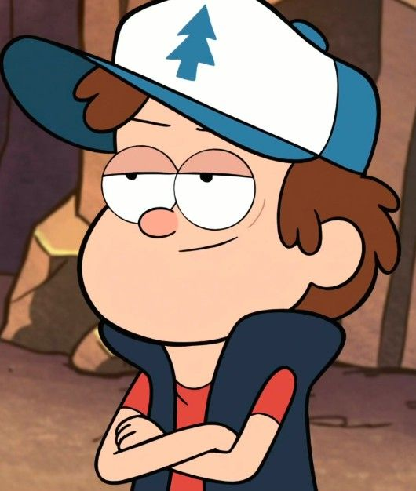
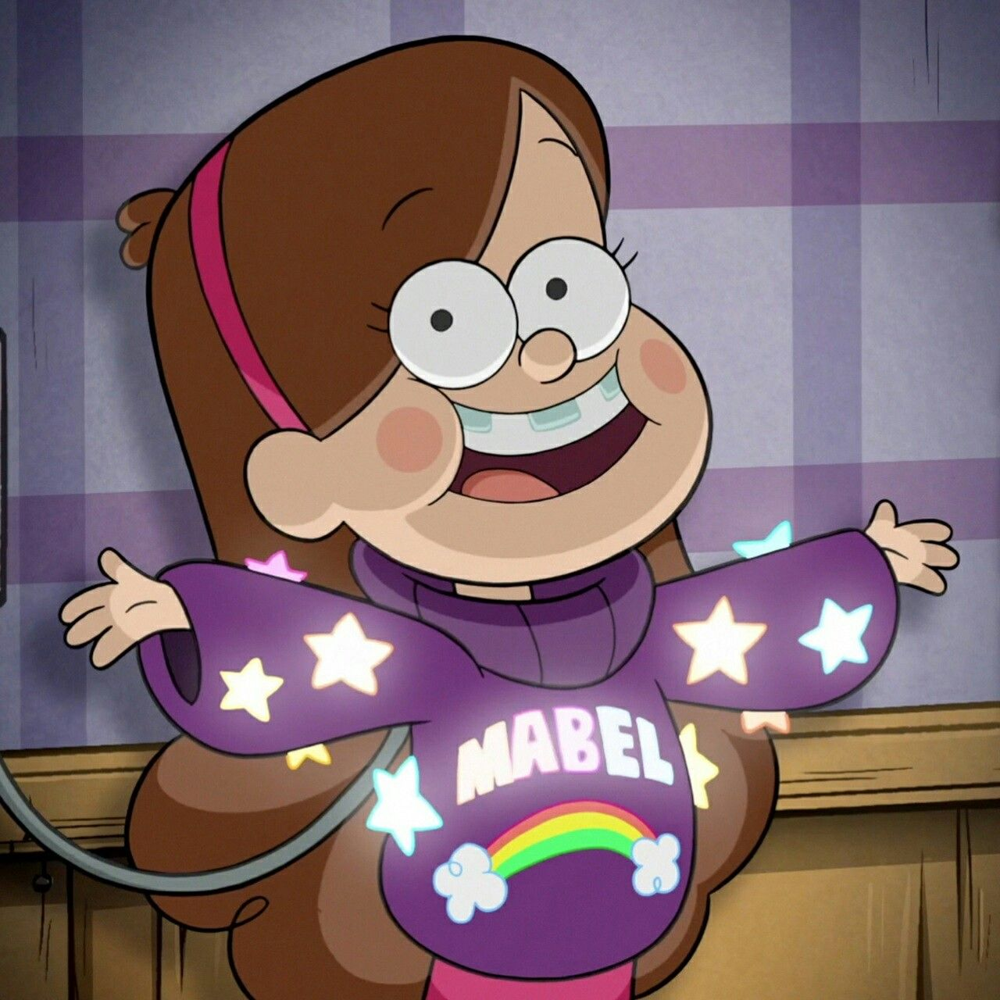
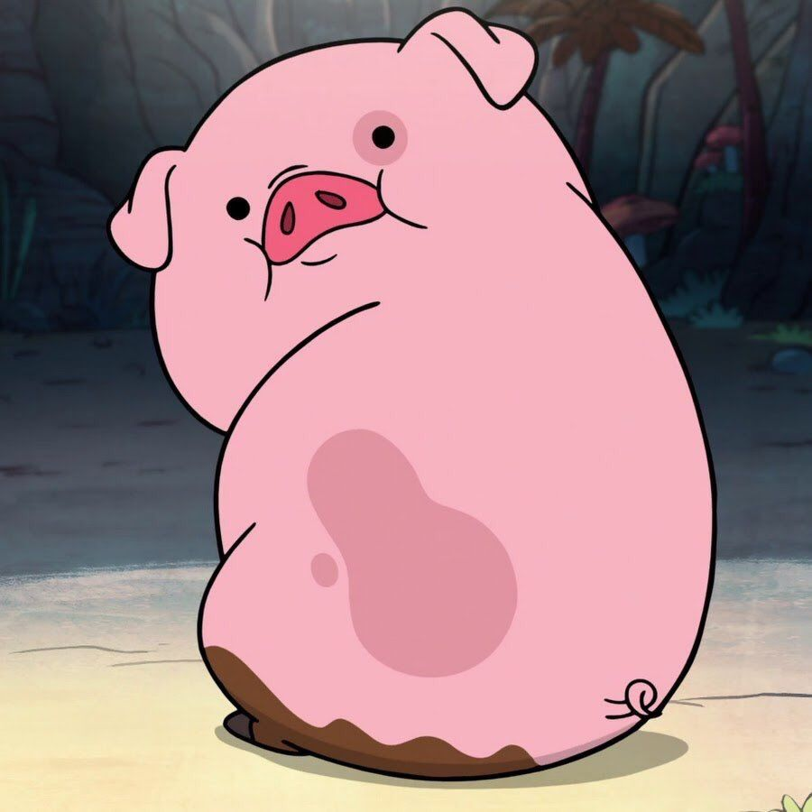
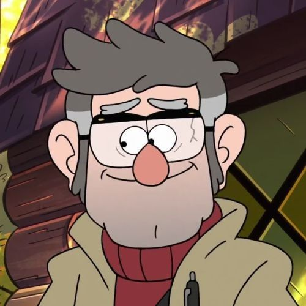
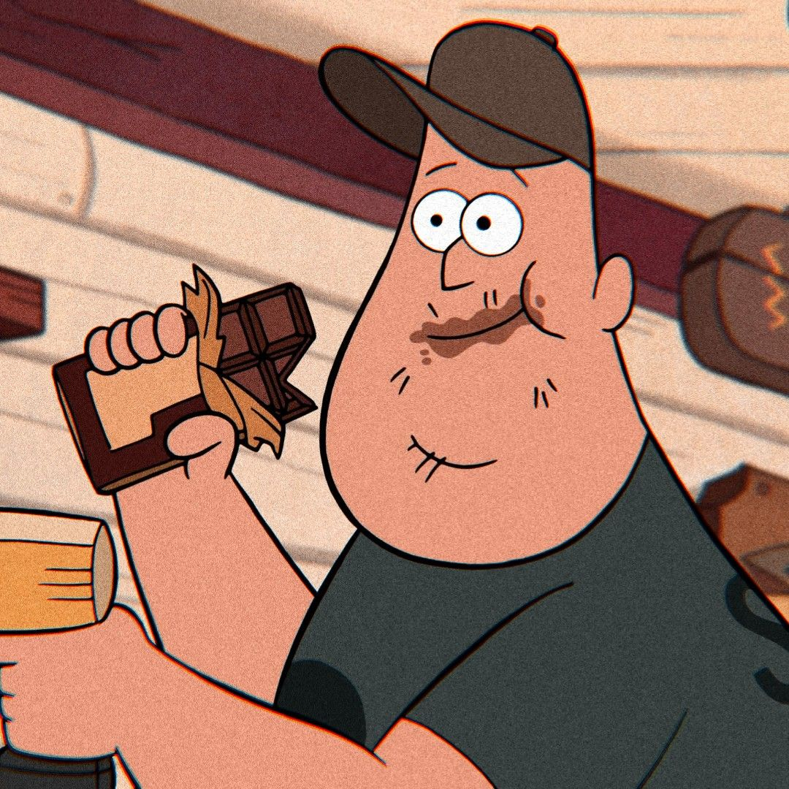
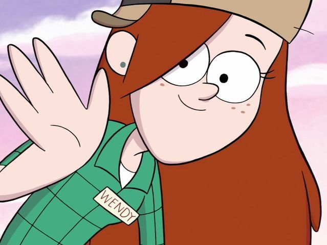
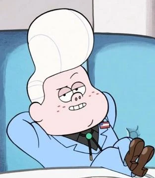
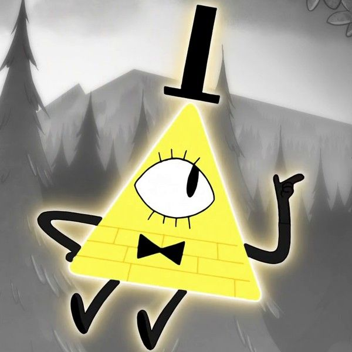

Gravity Falls
Gravity Falls est une ville située en plein milieux de l’Oregon, elle
est connue pour son musée le Mystery Shack qui été à l’époque un musée
de Statues de cire qui par ailleurs réouvrira ses portes lors de
l’épisode 3 Saison 1 : Le musée de Cire. C’est une ville remplie e
mystère que l’on découvre au fur et à mesure de la série. Cette ville
regorge de monstres, de créature ou de phénomène paranormal. On peut y
découvrir des Gnomes, des licornes, des fantômes… et plus encore. Pour
connaitre l’existence de tous ses mystères des journaux ont été écrit,
ils sont aux nombres de 3 au total, Dipper possède le 3eme qu’il
trouve par hasard en se baladant dans la forêt, des le 1er épisode de
la série. Le 1er et le 2eme sont détenue par Gideon. Ses journaux sont
spéciaux car si ont les réunie tout les 3 nous avons accès à un plan
pour ouvrir un portail entre les 2 mondes. Ils possèdent aussi des
écriture invisible que nous pouvons seulement voir à la lumière bleu.

Dipper Pines
Dipper est un enfant de 12ans, il est doté d’une très grande
intelligence. Il découvrira dans le premier épisode de la série le
journal numéro 3 ou il y découvrira les nombreux mystères qu’abrite
la ville de Gravity Falls.
Il passe les vacances d’été avec son grand-oncle Stan à Gravity
Falls, où lui et sa sœur rencontrent constamment les tendances
paranormales de la ville.

Mabel Pines
Mabel est une enfant de 12ans, elle est Dipper sont jumeaux. Elle
est fan de licorne et porte toujours des pulls colorés qu’elle
fabrique elle-même. Elle passe ses vacances d’été dans le Mistery
Shack qui est un magasins tenue par son oncle.
Là-bas elle adopte une approche de la vie beaucoup moins sérieuse
que son frère jumeau, alors qu’elle navigue dans un environnement
étrange et nouveau rempli de mystère.

Dandinou
Dandinou est un petit cochon que Mabel à gagner lors de la fête du
mystère. Il est devenu son animal de compagnie et les 2 sont
inséparable.

Stan Pines
Stan anciennement Stanley a lui aussi un frère jumeau appeler Ford.
Il est le responsable du magasins Mystery Shack ou il vend divers
objets dit « insolites » pour gagner de l’argent.
Durant l’été 2012 il y accueillera son neveu Dipper et sa nièce
Mabel, été pendant lequel ils se passera beaucoup de chose
fantastique, paranormal, mystérieuse…

Ford Pines
Ford appelé aussi Stanford et né avec une malformation qui lui dote
6 doigts à chaque main, il est lui aussi très intelligents. Ford et
son frère jumeau été très proche avant que Ford ne vienne à
disparaitre dans une faille spacio temporel.
On découvre le personnage de Ford un peu plus en détail dans la
saison 2 des Souvenirs de Gravity Falls.

Mousse Ramirez
Mousse est le premier employé du Mystery Shack, il a été recruter
quand il avait 12ans par Stan Pines, ce magasin lui est très cher.
Il n’a pas beaucoup n’amis. Ses seuls amis étant Dipper et Mabel des
enfants de 12 ans.
Il est l’un des seuls avec les jumeaux à croire qu’il se passe des
choses bizarres dans la ville de Gravity Falls, il les suivra alors
dans toute leurs aventures.

Wendy Corduroy
Wendy est une adolescente qui travail à temps partiel au Mystery
Shack. Cependant elle est assez turbulente et est prêt à tout pour
quitter son travail pour aller s’amuser avec ses amies ou partir à
l’aventure avec Mabel et Dipper.

Gideon Gleeful
Gideon est un enfant psychique frauduleux qui a soif de pouvoir et
veut à tout prit gouverné le monde pour avoir ce qu’il veut. Sont
plus grand ennemi étant la famille Pines il ira même jusqu’à faire
un pacte avec Bill Crypto lors de la saison 2 pour les anéantir.

Bill Crypto
Bill est un démon des rêves immensément puissant de la seconde
dimension qui veut provoquer la fin du monde en ouvrant une brèche
entre son royaume du cauchemar et le monde réel.
Bill reste un immense heaster eggs au sein de la séries car ont peu
déjà le voir lors du tout premier épisode représenté sur un
vitraille d’une fenêtre du Mystery Shack.